久々にお江戸のお寺をご紹介なのだ。
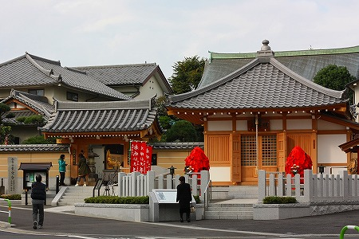
山手線の田端駅から歩いて数分。
東覚寺というお寺に向かう。
谷中七福神の福禄寿のある寺として有名だ。
関東以外の方にはピンと来ないかも知れないが谷中七福神巡りは江戸時代中期に興った七福神巡りの草分け的存在。
田端から谷中を経由して上野の不忍池の弁天堂まで歩く、大変人気のあるプチ巡礼コースなのだ。
その1番目のチェックポイントだけに正月ともなると田端の駅からこの東覚寺まで大勢の人が列をなして歩いている光景を目にすることが出来る。
そんなお寺の門前に護摩堂がある。
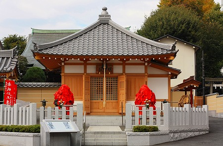
そのお堂の前に真っ赤な「何か」がある。
赤い紙がびっっっっっっっしり貼られている！
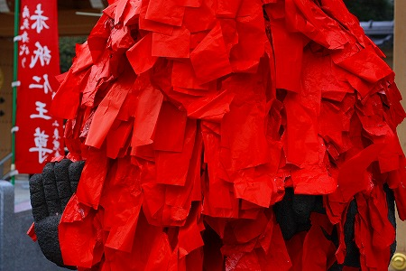
最早中身が何なのか判らないレベルの大量の赤紙。
傍らには
赤紙仁王尊とあるので仁王サマなんだろうけど…。
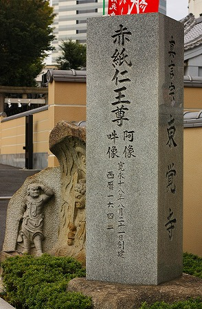
ピグモンあるいはガラモンみたいになっちゃってます…。
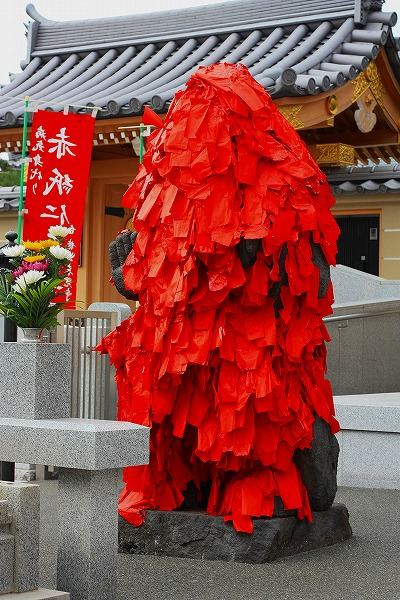 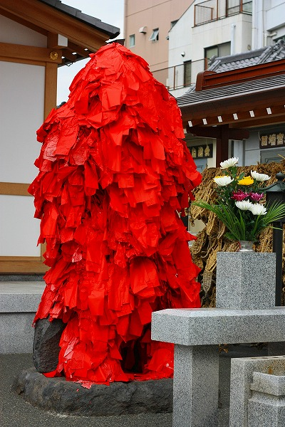
いや、顔が見えるだけピグモン、ガラモンの方がましか。
辛うじて右手だけが見える。グローブのようなごっつい手だな。
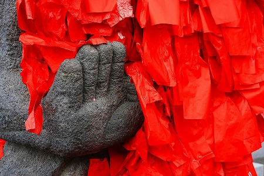
傍らには紙が貼られていない時の貴重な写真があった。
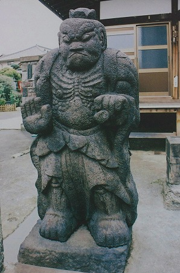 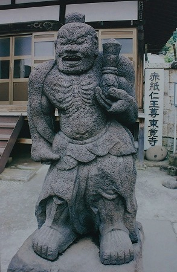
うむむ。左の吽像は正拳突きをしているのだろうか。カッチョいいぞ。
この写真の背後を見ればお判りの通り、この仁王さん道路の拡張などで場所が若干移転した。
私も随分前に一度来たことがあったのだが、その時と道ごと様子が変わっていて驚いた。
傍らには
大量の草鞋が奉納されていた。
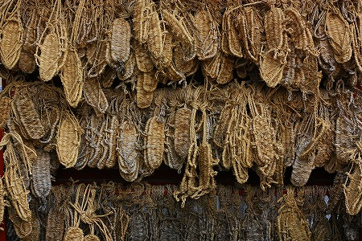
ココの参拝ルールは以下のとおり。
体の具合の悪い人が仁王サマの自分の患部と同じ部分に赤い紙を貼る。
↓
病気が平癒したらお礼として草鞋を奉納する。
…つまり赤い紙と草鞋が大量に奉納されているということはそれだけ霊験あらたかなのだろう。
この仁王像は寛永18（1641)年に宗海という僧侶が建立したという。
当時江戸で流行った疫病を鎮めるためだったとか。
これは幕末の頃の仁王サマの様子。
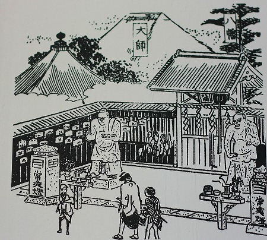
かつては隣接する田端八幡神社の門前に立っていたという。
隣に見える「大師」というのがここ東覚寺のことだろう。
これを見る限り少なくとも今のように紙だらけではなかったようだ。しかし門の脇に草鞋が吊るしてあるのは確認できる。
草鞋を奉納するのはここの仁王さんだけに限った話ではない。全国的に仁王サマへの奉納物としてはポピュラーだ。
ただしこんなピグモンみたいな仁王サマは見たことないぞ。
何でこんな事になっちゃったんだろう？
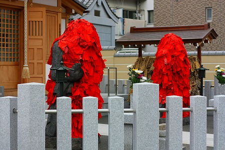
どうやら赤い紙を貼るようになったのは明治以降らしい。
赤には魔除けや疫病除けの意味があるとされている。中国では春節に赤い紙を戸口に貼ったりするのもそのためだ。
そしてもうひとつ。赤は炎の象徴でもあり、
病魔を焼き消すという説もある。
いわば不動明王のバックファイアーのようなものか。
とすればまるで
仁王サマ自体が炎上しているみたいだ。
そこでふと思い出したのが
茨城県の蝋燭地蔵。
自分の体の悪いところと同じ場所に蝋燭で火をつけるというお地蔵さんなのだが、蝋燭が多すぎて石のお地蔵さんが火だるまになってしまうのだ。
またムラの災厄をそのよりしろを燃やすことで消し去ってしまう行事は日本中に見られる。
何やら似てませんか？
もちろん直接の関係はないと思うが、どこか病気や災厄を焼却する、というイメージの共通性があるように思えてならない。
もちろんお釈迦様が地蔵に赤い紙を貼れと言ったわけでもなければ、経典に赤い紙は病を治すと書いてあるわけでもない。
民衆の間から生まれた
民間信仰の一種であることは言を待たないが、見た目が強烈なので民間信仰というより呪術という概念の方がしっくりくるような気がする。
東覚寺の境内。色々な像が並んでいる。
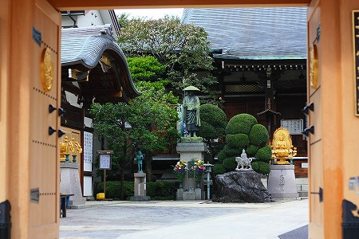
一見ギョットする仁王さんだったが、それだけ大勢の人が神仏に縋ったということだ。
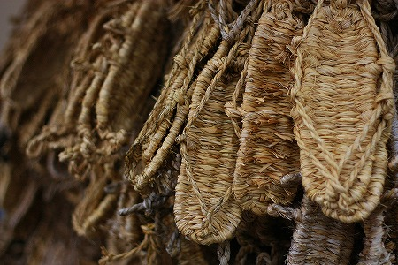